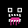
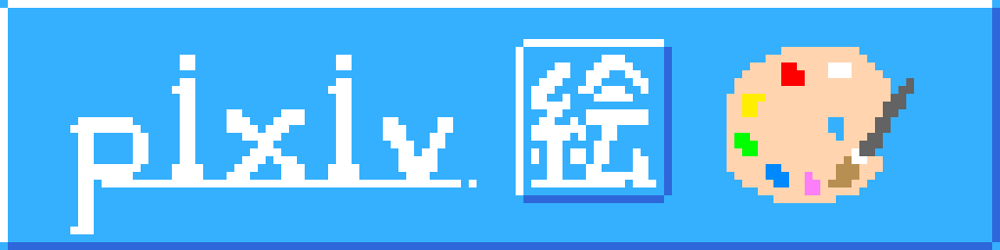
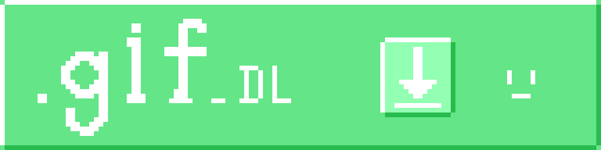
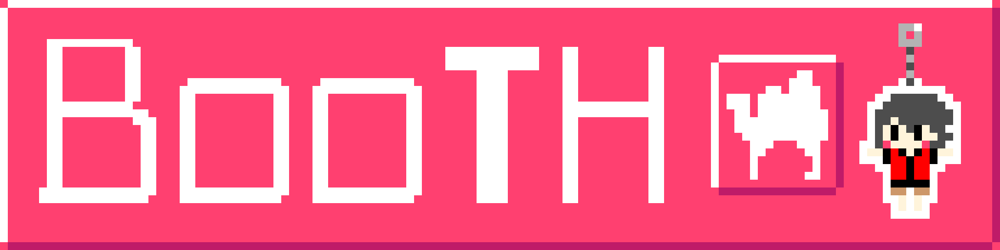
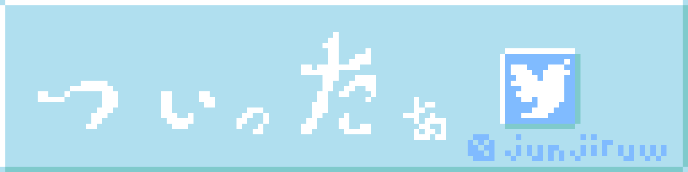
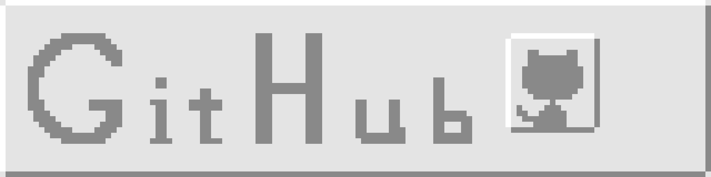

今日も元気だでいんでい
JUN汁ｗおもちゃばこ。へようこそ。各ページには左上にある
☛
からアクセスできるよ。
過去の更新履歴が見たい人はGitHubのcommit履歴から見れます。ココ
-


- 絵です。ｱﾆﾒｰｼｮﾝをダウンロードしたいときは緑のやつ。
-

- JUN汁ｗ屋さんではグッズが買えます。買うより作ったほうが安いです。
-


- Twitterは💩みたいなことしか言ってないです。GitHubにはこのサイトがあります。
旧サイト（三⦿ω⦿三）（三❗ω❗三）
テスト用ページ